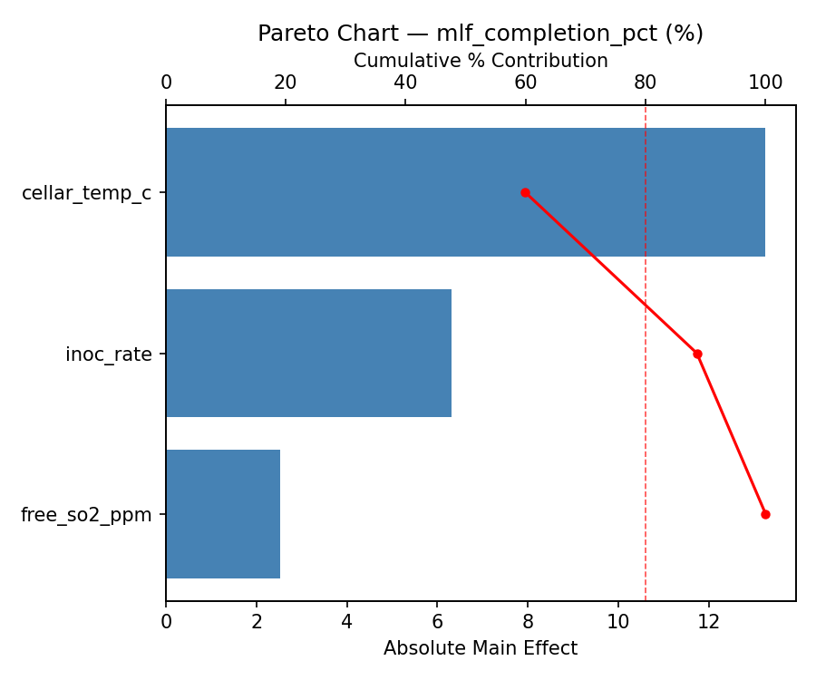
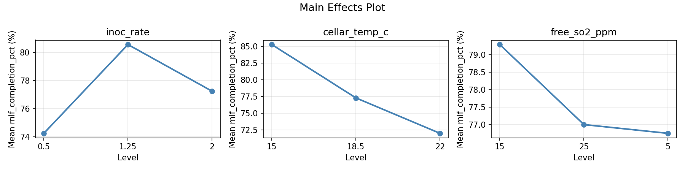
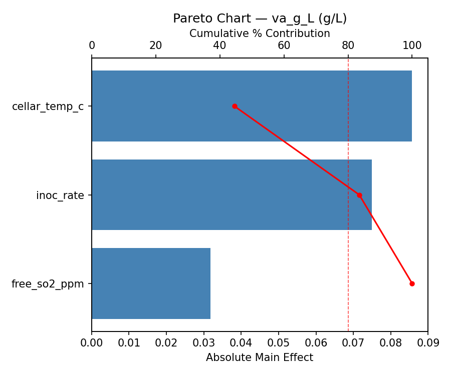
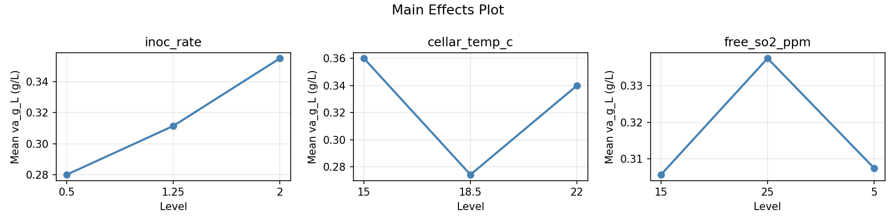
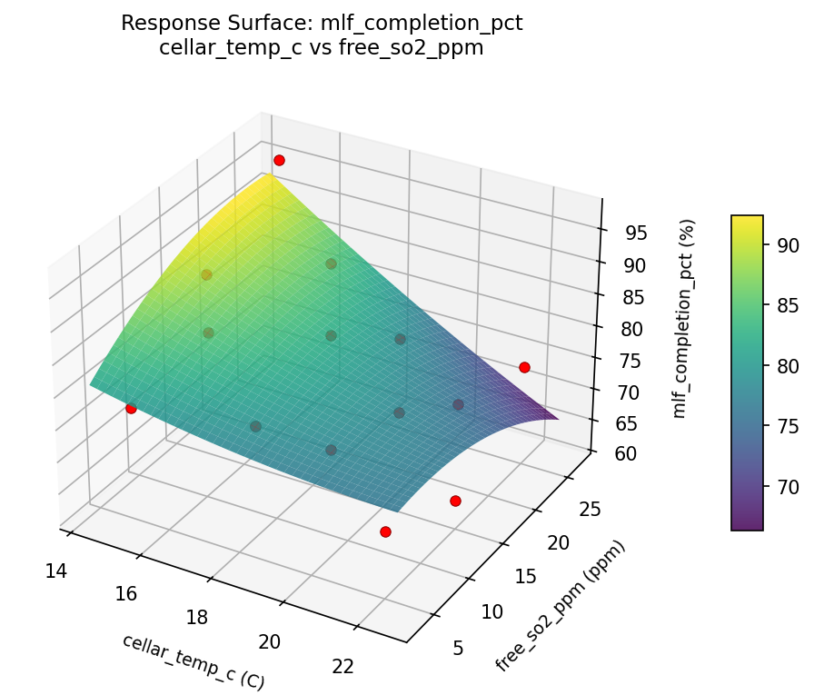
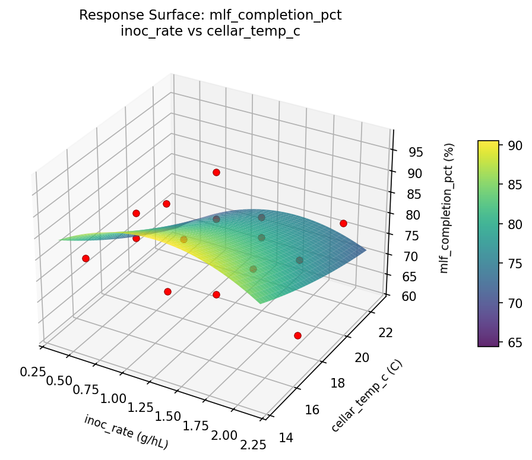
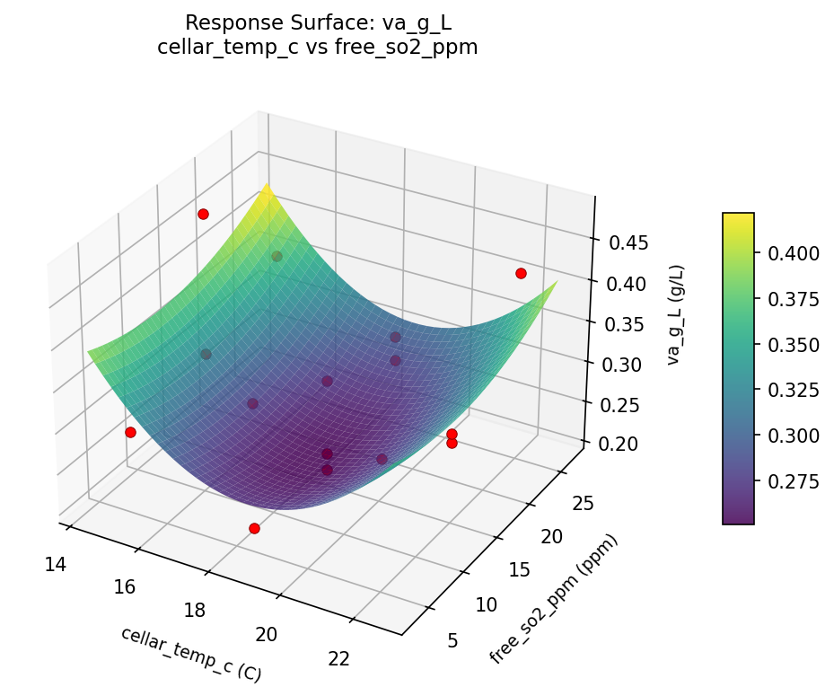
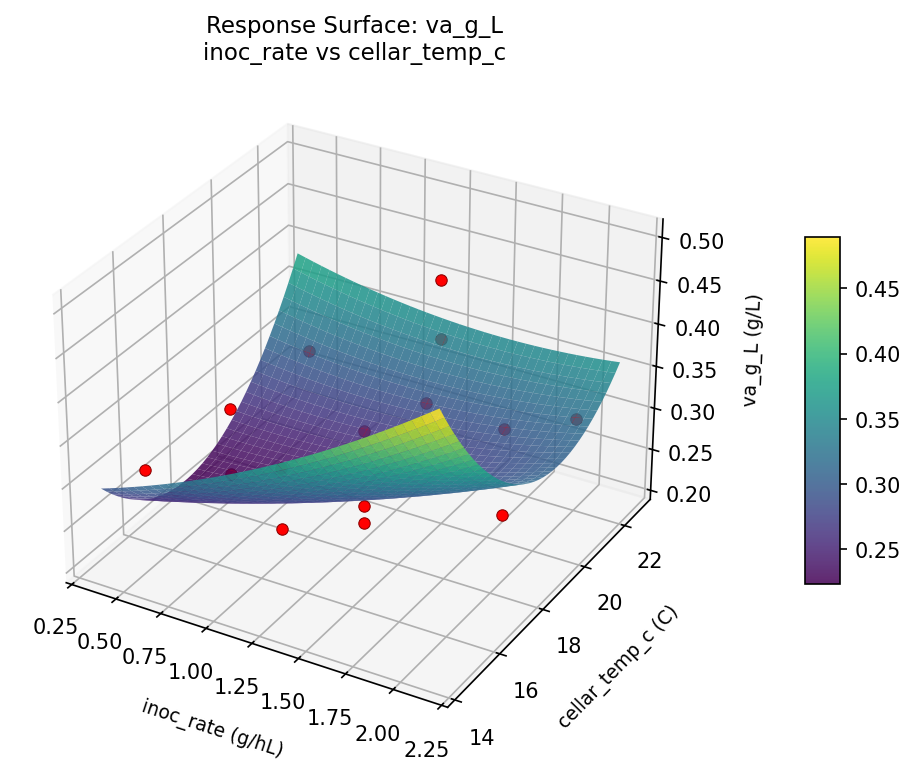
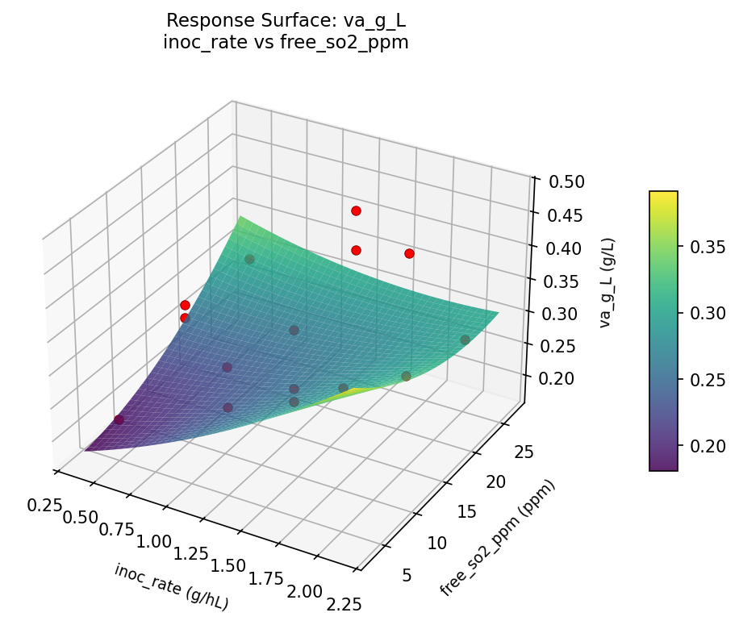

Experimental Setup
Factors
| Factor | Low | High | Unit |
|---|
inoc_rate | 0.5 | 2.0 | g/hL |
cellar_temp_c | 15 | 22 | C |
free_so2_ppm | 5 | 25 | ppm |
Fixed: wine_type = chardonnay, ph = 3.4
Responses
| Response | Direction | Unit |
|---|
mlf_completion_pct | ↑ maximize | % |
va_g_L | ↓ minimize | g/L |
Configuration
{
"metadata": {
"name": "Wine Malolactic Fermentation",
"description": "Box-Behnken design to maximize MLF completion and minimize VA by tuning inoculation rate, cellar temperature, and free SO2 level"
},
"factors": [
{
"name": "inoc_rate",
"levels": [
"0.5",
"2.0"
],
"type": "continuous",
"unit": "g/hL"
},
{
"name": "cellar_temp_c",
"levels": [
"15",
"22"
],
"type": "continuous",
"unit": "C"
},
{
"name": "free_so2_ppm",
"levels": [
"5",
"25"
],
"type": "continuous",
"unit": "ppm"
}
],
"fixed_factors": {
"wine_type": "chardonnay",
"ph": "3.4"
},
"responses": [
{
"name": "mlf_completion_pct",
"optimize": "maximize",
"unit": "%"
},
{
"name": "va_g_L",
"optimize": "minimize",
"unit": "g/L"
}
],
"settings": {
"operation": "box_behnken",
"test_script": "use_cases/243_wine_malolactic/sim.sh"
}
}
Experimental Matrix
The Box-Behnken Design produces 15 runs. Each row is one experiment with specific factor settings.
| Run | inoc_rate | cellar_temp_c | free_so2_ppm |
|---|
| 1 | 1.25 | 15 | 5 |
| 2 | 1.25 | 18.5 | 15 |
| 3 | 2 | 18.5 | 25 |
| 4 | 2 | 18.5 | 5 |
| 5 | 1.25 | 18.5 | 15 |
| 6 | 1.25 | 18.5 | 15 |
| 7 | 0.5 | 18.5 | 25 |
| 8 | 2 | 15 | 15 |
| 9 | 1.25 | 15 | 25 |
| 10 | 2 | 22 | 15 |
| 11 | 0.5 | 18.5 | 5 |
| 12 | 1.25 | 22 | 25 |
| 13 | 0.5 | 15 | 15 |
| 14 | 0.5 | 22 | 15 |
| 15 | 1.25 | 22 | 5 |
Step-by-Step Workflow
1
Preview the design
$ python doe.py info --config use_cases/243_wine_malolactic/config.json
2
Generate the runner script
$ python doe.py generate --config use_cases/243_wine_malolactic/config.json \
--output use_cases/243_wine_malolactic/results/run.sh --seed 42
3
Execute the experiments
$ bash use_cases/243_wine_malolactic/results/run.sh
4
Analyze results
$ python doe.py analyze --config use_cases/243_wine_malolactic/config.json
5
Get optimization recommendations
$ python doe.py optimize --config use_cases/243_wine_malolactic/config.json
6
Generate the HTML report
$ python doe.py report --config use_cases/243_wine_malolactic/config.json \
--output use_cases/243_wine_malolactic/results/report.html
Features Exercised
| Feature | Value |
|---|
| Design type | box_behnken |
| Factor types | continuous (all 3) |
| Arg style | double-dash |
| Responses | 2 (mlf_completion_pct ↑, va_g_L ↓) |
| Total runs | 15 |
Analysis Results
Generated from actual experiment runs using the DOE Helper Tool.
Response: mlf_completion_pct
Top factors: cellar_temp_c (59.9%), inoc_rate (28.6%), free_so2_ppm (11.5%).
Pareto Chart

Main Effects Plot

Response: va_g_L
Top factors: cellar_temp_c (44.5%), inoc_rate (39.0%), free_so2_ppm (16.5%).
Pareto Chart

Main Effects Plot

Response Surface Plots
3D surfaces fitted with quadratic RSM. Red dots are observed data points.
mlf completion pct cellar temp c vs free so2 ppm

mlf completion pct inoc rate vs cellar temp c

mlf completion pct inoc rate vs free so2 ppm

va g L cellar temp c vs free so2 ppm

va g L inoc rate vs cellar temp c

va g L inoc rate vs free so2 ppm

Full Analysis Output
RSM surface: rsm_mlf_completion_pct_inoc_rate_vs_cellar_temp_c.png
RSM surface: rsm_mlf_completion_pct_inoc_rate_vs_free_so2_ppm.png
RSM surface: rsm_mlf_completion_pct_cellar_temp_c_vs_free_so2_ppm.png
RSM surface: rsm_va_g_L_inoc_rate_vs_cellar_temp_c.png
RSM surface: rsm_va_g_L_inoc_rate_vs_free_so2_ppm.png
RSM surface: rsm_va_g_L_cellar_temp_c_vs_free_so2_ppm.png
=== Main Effects: mlf_completion_pct ===
Factor Effect Std Error % Contribution
--------------------------------------------------------------
cellar_temp_c 13.2500 2.6565 59.9%
inoc_rate 6.3214 2.6565 28.6%
free_so2_ppm 2.5357 2.6565 11.5%
=== Summary Statistics: mlf_completion_pct ===
inoc_rate:
Level N Mean Std Min Max
------------------------------------------------------------
0.5 4 74.2500 7.3201 64.0000 80.0000
1.25 7 80.5714 11.9563 66.0000 97.0000
2 4 77.2500 10.9354 62.0000 88.0000
cellar_temp_c:
Level N Mean Std Min Max
------------------------------------------------------------
15 4 85.2500 9.1788 77.0000 97.0000
18.5 7 77.2857 11.1462 62.0000 95.0000
22 4 72.0000 6.4807 64.0000 79.0000
free_so2_ppm:
Level N Mean Std Min Max
------------------------------------------------------------
15 7 79.2857 11.2207 64.0000 95.0000
25 4 77.0000 14.5831 62.0000 97.0000
5 4 76.7500 4.7170 70.0000 80.0000
=== Main Effects: va_g_L ===
Factor Effect Std Error % Contribution
--------------------------------------------------------------
cellar_temp_c 0.0857 0.0190 44.5%
inoc_rate 0.0750 0.0190 39.0%
free_so2_ppm 0.0318 0.0190 16.5%
=== Summary Statistics: va_g_L ===
inoc_rate:
Level N Mean Std Min Max
------------------------------------------------------------
0.5 4 0.2800 0.0408 0.2200 0.3100
1.25 7 0.3114 0.0743 0.2100 0.4200
2 4 0.3550 0.0933 0.2700 0.4800
cellar_temp_c:
Level N Mean Std Min Max
------------------------------------------------------------
15 4 0.3600 0.0852 0.2900 0.4800
18.5 7 0.2743 0.0591 0.2100 0.3700
22 4 0.3400 0.0594 0.2900 0.4200
free_so2_ppm:
Level N Mean Std Min Max
------------------------------------------------------------
15 7 0.3057 0.0873 0.2100 0.4800
25 4 0.3375 0.0665 0.2700 0.4200
5 4 0.3075 0.0675 0.2200 0.3700
Pareto chart (mlf_completion_pct): use_cases/243_wine_malolactic/results/analysis/pareto_mlf_completion_pct.png
Pareto chart (va_g_L): use_cases/243_wine_malolactic/results/analysis/pareto_va_g_L.png
Main effects (mlf_completion_pct): use_cases/243_wine_malolactic/results/analysis/main_effects_mlf_completion_pct.png
Main effects (va_g_L): use_cases/243_wine_malolactic/results/analysis/main_effects_va_g_L.png
Optimization Recommendations
=== Optimization: mlf_completion_pct ===
Direction: maximize
Best observed run: #15
inoc_rate = 0.5
cellar_temp_c = 18.5
free_so2_ppm = 5
Value: 97.0
RSM Model (linear, R² = 0.5103, Adj R² = 0.3767):
Coefficients:
intercept +78.0000
inoc_rate +1.8750
cellar_temp_c -9.5000
free_so2_ppm -0.8750
RSM Model (quadratic, R² = 0.9047, Adj R² = 0.7331):
Coefficients:
intercept +77.0000
inoc_rate +1.8750
cellar_temp_c -9.5000
free_so2_ppm -0.8750
inoc_rate*cellar_temp_c -3.0000
inoc_rate*free_so2_ppm +7.7500
cellar_temp_c*free_so2_ppm -0.5000
inoc_rate^2 +6.3750
cellar_temp_c^2 -5.8750
free_so2_ppm^2 +1.3750
Curvature analysis:
inoc_rate coef=+6.3750 convex (has a minimum)
cellar_temp_c coef=-5.8750 concave (has a maximum)
free_so2_ppm coef=+1.3750 convex (has a minimum)
Notable interactions:
inoc_rate*free_so2_ppm coef=+7.7500 (synergistic)
inoc_rate*cellar_temp_c coef=-3.0000 (antagonistic)
cellar_temp_c*free_so2_ppm coef=-0.5000 (antagonistic)
Predicted optimum (from quadratic model):
inoc_rate = 2
cellar_temp_c = 18.5
free_so2_ppm = 25
Predicted value: 93.5000
Model quality: Excellent fit — surface predictions are reliable.
Factor importance:
1. cellar_temp_c (effect: 19.0, contribution: 63.8%)
2. inoc_rate (effect: 8.6, contribution: 28.8%)
3. free_so2_ppm (effect: 2.2, contribution: 7.4%)
=== Optimization: va_g_L ===
Direction: minimize
Best observed run: #1
inoc_rate = 1.25
cellar_temp_c = 15
free_so2_ppm = 25
Value: 0.21
RSM Model (linear, R² = 0.0526, Adj R² = -0.2058):
Coefficients:
intercept +0.3147
inoc_rate +0.0162
cellar_temp_c -0.0088
free_so2_ppm +0.0125
RSM Model (quadratic, R² = 0.6814, Adj R² = 0.1080):
Coefficients:
intercept +0.2700
inoc_rate +0.0163
cellar_temp_c -0.0088
free_so2_ppm +0.0125
inoc_rate*cellar_temp_c +0.0275
inoc_rate*free_so2_ppm +0.0300
cellar_temp_c*free_so2_ppm +0.0450
inoc_rate^2 +0.0687
cellar_temp_c^2 -0.0362
free_so2_ppm^2 +0.0512
Curvature analysis:
inoc_rate coef=+0.0687 negligible curvature
free_so2_ppm coef=+0.0512 negligible curvature
cellar_temp_c coef=-0.0362 negligible curvature
Predicted optimum (from quadratic model):
inoc_rate = 2
cellar_temp_c = 18.5
free_so2_ppm = 25
Predicted value: 0.4487
Model quality: Moderate fit — use predictions directionally, not precisely.
Factor importance:
1. inoc_rate (effect: 0.1, contribution: 42.2%)
2. free_so2_ppm (effect: 0.1, contribution: 30.9%)
3. cellar_temp_c (effect: 0.1, contribution: 26.9%)